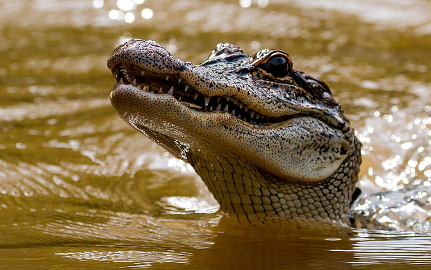

| Jacaré é o nome comum dado aos animais da classe Reptilia, Ordem Crocodylia e família Alligatoridae. Como todos os répteis, são ectotérmicos e possuem o corpo coberto por escamas. Habitam rios, lagos e pântanos. São excelentes nadadores, permanecendo com as patas próximas ao corpo enquanto ondulam lateralmente o corpo e a cauda para se locomover. Em terra também são muito rápidos, andando com a barriga levantada e as patas sob o corpo. Podem chegar a 6,5 m de comprimento e viver de 80 a 100 anos. |  |